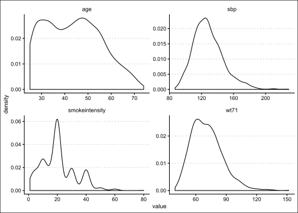
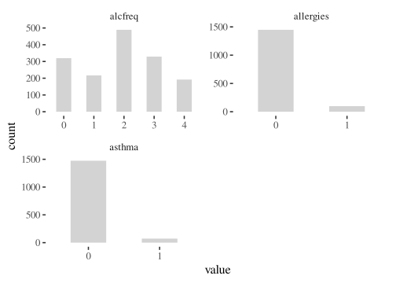

View on GitHub
File an issue
In this section, we’ll provide some examples of basic statistical analyses you might be called upon to do at some point.
Note that the analyses you conduct as part of real research will almost certainly be more complicated than the code shown here. However, the hope is that you’ll get enough of a feel to begin putting the pieces together as demanded by a given project.
If you’d like to try any of these examples on your own, we’re using the NHANES I Epidemiologic Followup Study (NHEFS) data set freely available at the website for Causal Inference: What If by Miguel A. Hernán and James M. Robins.
For examples based in R, we’ll use the CSV file they provide, and the sas7bdat data set for our SAS examples.
The website itself contains extensive code examples in SAS, Stata, R, and Python—everything you could want!—so those who will be taking advanced epidemiologic or causal inference coursework should refer to those resources for guidance on how to implement relevant analyses. We’ll cover a little bit here, but only briefly.
| Variable name | Description |
|---|---|
| active | IN YOUR USUAL DAY, HOW ACTIVE ARE YOU? IN 1971, 0:very active, 1:moderately active, 2:inactive |
| age | AGE IN 1971 |
| alcoholfreq | HOW OFTEN DO YOU DRINK? IN 1971 0: Almost every day, 1: 2-3 times/week, 2: 1-4 times/month, 3: < 12 times/year, 4: No alcohol last year, 5: Unknown |
| alcoholhowmuch | WHEN YOU DRINK, HOW MUCH DO YOU DRINK? IN 1971 |
| alcoholpy | HAVE YOU HAD 1 DRINK PAST YEAR? IN 1971, 1:EVER, 0:NEVER; 2:MISSING |
| alcoholtype | WHICH DO YOU MOST FREQUENTLY DRINK? IN 1971 1: BEER, 2: WINE, 3: LIQUOR, 4: OTHER/UNKNOWN |
| allergies | USE ALLERGIES MEDICATION IN 1971, 1:EVER, 0:NEVER |
| asthma | DX ASTHMA IN 1971, 1:EVER, 0:NEVER |
| bithcontrol | BIRTH CONTROL PILLS PAST 6 MONTHS? IN 1971 1:YES, 0:NO, 2:MISSING |
| birthplace | CHECK STATE CODE - SECOND PAGE |
| boweltrouble | USE BOWEL TROUBLE MEDICATION IN 1971, 1:EVER, 0:NEVER, ; 2:MISSING |
| bronch | DX CHRONIC BRONCHITIS/EMPHYSEMA IN 1971, 1:EVER, 0:NEVER |
| cholesterol | SERUM CHOLESTEROL (MG/100ML) IN 1971 |
| chroniccough | DX CHRONIC COUGH IN 1971, 1:EVER, 0:NEVER |
| colitis | DX COLITIS IN 1971, 1:EVER, 0:NEVER |
| dadth | DAY OF DEATH |
| dbp | DIASTOLIC BLOOD PRESSURE IN 1982 |
| death | DEATH BY 1992, 1:YES, 0:NO |
| diabetes | DX DIABETES IN 1971, 1:EVER, 0:NEVER, 2:MISSING |
| education | AMOUNT OF EDUCATION BY 1971: 1: 8TH GRADE OR LESS, 2: HS DROPOUT, 3: HS, 4:COLLEGE DROPOUT, 5: COLLEGE OR MORE |
| exercise | IN RECREATION, HOW MUCH EXERCISE? IN 1971, 0:much exercise,1:moderate exercise,2:little or no exercise |
| hayfever | DX HAY FEVER IN 1971, 1:EVER, 0:NEVER |
| hbp | DX HIGH BLOOD PRESSURE IN 1971, 1:EVER, 0:NEVER, 2:MISSING |
| hbpmed | USE HIGH BLOOD PRESSURE MEDICATION IN 1971, 1:EVER, 0:NEVER, ; 2:MISSING |
| headache | USE HEADACHE MEDICATION IN 1971, 1:EVER, 0:NEVER |
| hepatitis | DX HEPATITIS IN 1971, 1:EVER, 0:NEVER |
| hf | DX HEART FAILURE IN 1971, 1:EVER, 0:NEVER |
| hightax82 | LIVING IN A HIGHLY TAXED STATE IN 1982, High taxed state of residence=1, 0 otherwise |
| ht | HEIGHT IN CENTIMETERS IN 1971 |
| income | TOTAL FAMILY INCOME IN 1971 11:<$1000, 12: 1000-1999, 13: 2000-2999, 14: 3000-3999, 15: 4000-4999, 16: 5000-5999, 17: 6000-6999, 18: 7000-9999, 19: 10000-14999, 20: 15000-19999, 21: 20000-24999, 22: 25000+ |
| infection | USE INFECTION MEDICATION IN 1971, 1:EVER, 0:NEVER |
| lackpep | USELACK OF PEP MEDICATION IN 1971, 1:EVER, 0:NEVER |
| marital | MARITAL STATUS IN 1971 1: Under 17, 2: Married, 3: Widowed, 4: Never married, 5: Divorced, 6: Separated, 8: Unknown |
| modth | MONTH OF DEATH |
| nerves | USE NERVES MEDICATION IN 1971, 1:EVER, 0:NEVER |
| nervousbreak | DX NERVOUS BREAKDOWN IN 1971, 1:EVER, 0:NEVER |
| otherpain | USE OTHER PAINS MEDICATION IN 1971, 1:EVER, 0:NEVER |
| pepticulcer | DX PEPTIC ULCER IN 1971, 1:EVER, 0:NEVER |
| pica | DO YOU EAT DIRT OR CLAY, STARCH OR OTHER NON STANDARD FOOD? IN 1971 1:EVER, 0:NEVER; 2:MISSING |
| polio | DX POLIO IN 1971, 1:EVER, 0:NEVER |
| pregnancies | TOTAL NUMBER OF PREGNANCIES? IN 1971 |
| price71 | AVG TOBACCO PRICE IN STATE OF RESIDENCE 1971 (US$2008) |
| price71_82 | DIFFERENCE IN AVG TOBACCO PRICE IN STATE OF RESIDENCE 1971-1982 (US$2008) |
| price82 | AVG TOBACCO PRICE IN STATE OF RESIDENCE 1982 (US$2008) |
| qsmk | QUIT SMOKING BETWEEN 1ST QUESTIONNAIRE AND 1982, 1:YES, 0:NO |
| race | 0: WHITE 1: BLACK OR OTHER IN 1971 |
| sbp | SYSTOLIC BLOOD PRESSURE IN 1982 |
| school | HIGHEST GRADE OF REGULAR SCHOOL EVER IN 1971 |
| seqn | UNIQUE PERSONAL IDENTIFIER |
| sex | 0: MALE 1: FEMALE |
| smokeintensity | NUMBER OF CIGARETTES SMOKED PER DAY IN 1971 |
| smkintensity 82_71 | INCREASE IN NUMBER OF CIGARETTES/DAY BETWEEN 1971 and 1982 |
| smokeyrs | YEARS OF SMOKING |
| tax71 | TOBACCO TAX IN STATE OF RESIDENCE 1971 (US$2008) |
| tax71_82 | DIFFERENCE IN TOBACCO TAX IN STATE OF RESIDENCE 1971-1982 (US$2008) |
| tax82 | TOBACCO TAX IN STATE OF RESIDENCE 1971 (US$2008) |
| tb | DX TUBERCULOSIS IN 1971, 1:EVER, 0:NEVER |
| tumor | DX MALIGNANT TUMOR/GROWTH IN 1971, 1:EVER, 0:NEVER |
| weakheart | USE WEAK HEART MEDICATION IN 1971, 1:EVER, 0:NEVER |
| wt71 | WEIGHT IN KILOGRAMS IN 1971 |
| wt82 | WEIGHT IN KILOGRAMS IN 1982 |
| wt82_71 | WEIGHT CHANGE IN KILOGRAMS |
| wtloss | USE WEIGHT LOSS MEDICATION IN 1971, 1:EVER, 0:NEVER |
| yrdth | YEAR OF DEATH |
First, let’s read in our data and glance at it using a couple of different views.
# A tibble: 6 × 64
seqn qsmk death yrdth modth dadth sbp dbp sex age race income
<dbl> <dbl> <dbl> <dbl> <dbl> <dbl> <dbl> <dbl> <dbl> <dbl> <dbl> <dbl>
1 233 0 0 NA NA NA 175 96 0 42 1 19
2 235 0 0 NA NA NA 123 80 0 36 0 18
3 244 0 0 NA NA NA 115 75 1 56 1 15
4 245 0 1 85 2 14 148 78 0 68 1 15
5 252 0 0 NA NA NA 118 77 0 40 0 18
6 257 0 0 NA NA NA 141 83 1 43 1 11
# … with 52 more variables: marital <dbl>, school <dbl>, education <dbl>,
# ht <dbl>, wt71 <dbl>, wt82 <dbl>, wt82_71 <dbl>, birthplace <dbl>,
# smokeintensity <dbl>, smkintensity82_71 <dbl>, smokeyrs <dbl>,
# asthma <dbl>, bronch <dbl>, tb <dbl>, hf <dbl>, hbp <dbl>,
# pepticulcer <dbl>, colitis <dbl>, hepatitis <dbl>, chroniccough <dbl>,
# hayfever <dbl>, diabetes <dbl>, polio <dbl>, tumor <dbl>,
# nervousbreak <dbl>, alcoholpy <dbl>, alcoholfreq <dbl>, …Rows: 1,629
Columns: 64
$ seqn <dbl> 233, 235, 244, 245, 252, 257, 262, 266, 419, 420, 42…
$ qsmk <dbl> 0, 0, 0, 0, 0, 0, 0, 0, 0, 0, 1, 0, 0, 0, 1, 0, 0, 1…
$ death <dbl> 0, 0, 0, 1, 0, 0, 0, 0, 1, 1, 0, 1, 0, 0, 1, 0, 0, 0…
$ yrdth <dbl> NA, NA, NA, 85, NA, NA, NA, NA, 84, 86, NA, 92, NA, …
$ modth <dbl> NA, NA, NA, 2, NA, NA, NA, NA, 10, 10, NA, 11, NA, N…
$ dadth <dbl> NA, NA, NA, 14, NA, NA, NA, NA, 13, 17, NA, 28, NA, …
$ sbp <dbl> 175, 123, 115, 148, 118, 141, 132, 100, 163, 184, 13…
$ dbp <dbl> 96, 80, 75, 78, 77, 83, 69, 53, 79, 106, 89, 69, 80,…
$ sex <dbl> 0, 0, 1, 0, 0, 1, 1, 1, 0, 0, 0, 0, 1, 1, 1, 1, 0, 1…
$ age <dbl> 42, 36, 56, 68, 40, 43, 56, 29, 51, 43, 43, 34, 54, …
$ race <dbl> 1, 0, 1, 1, 0, 1, 0, 0, 0, 0, 0, 0, 0, 1, 0, 0, 0, 0…
$ income <dbl> 19, 18, 15, 15, 18, 11, 19, 22, 18, 16, 19, 18, 16, …
$ marital <dbl> 2, 2, 3, 3, 2, 4, 2, 2, 2, 2, 2, 2, 3, 2, 2, 2, 2, 2…
$ school <dbl> 7, 9, 11, 5, 11, 9, 12, 12, 10, 11, 12, 12, 8, 12, 0…
$ education <dbl> 1, 2, 2, 1, 2, 2, 3, 3, 2, 2, 3, 3, 1, 3, 1, 3, 3, 3…
$ ht <dbl> 174.1875, 159.3750, 168.5000, 170.1875, 181.8750, 16…
$ wt71 <dbl> 79.04, 58.63, 56.81, 59.42, 87.09, 99.00, 63.05, 58.…
$ wt82 <dbl> 68.94604, 61.23497, 66.22449, 64.41012, 92.07925, 10…
$ wt82_71 <dbl> -10.0939598, 2.6049700, 9.4144860, 4.9901165, 4.9892…
$ birthplace <dbl> 47, 42, 51, 37, 42, 34, NA, NA, 42, 42, 42, 42, NA, …
$ smokeintensity <dbl> 30, 20, 20, 3, 20, 10, 20, 2, 25, 20, 30, 40, 20, 10…
$ smkintensity82_71 <dbl> -10, -10, -14, 4, 0, 10, 0, 1, -10, -20, -30, -10, -…
$ smokeyrs <dbl> 29, 24, 26, 53, 19, 21, 39, 9, 37, 25, 24, 20, 19, 3…
$ asthma <dbl> 0, 0, 0, 0, 0, 0, 0, 0, 0, 0, 0, 0, 0, 0, 0, 0, 0, 0…
$ bronch <dbl> 0, 0, 0, 0, 0, 0, 0, 0, 0, 0, 0, 0, 1, 0, 1, 0, 0, 0…
$ tb <dbl> 0, 0, 0, 0, 0, 0, 0, 0, 0, 0, 0, 0, 0, 0, 0, 0, 0, 1…
$ hf <dbl> 0, 0, 0, 0, 0, 0, 0, 0, 0, 0, 0, 0, 0, 0, 0, 0, 0, 0…
$ hbp <dbl> 1, 0, 0, 1, 0, 0, 0, 0, 0, 0, 0, 0, 1, 1, 0, 0, 0, 0…
$ pepticulcer <dbl> 1, 0, 0, 0, 0, 0, 0, 0, 0, 0, 0, 1, 0, 0, 0, 0, 0, 0…
$ colitis <dbl> 0, 0, 0, 0, 0, 0, 0, 0, 0, 0, 0, 0, 0, 0, 0, 0, 0, 0…
$ hepatitis <dbl> 0, 0, 0, 0, 0, 0, 0, 0, 0, 1, 0, 0, 0, 0, 0, 0, 0, 0…
$ chroniccough <dbl> 0, 0, 0, 0, 0, 0, 0, 0, 0, 0, 0, 0, 0, 0, 1, 0, 0, 0…
$ hayfever <dbl> 0, 0, 1, 0, 0, 0, 0, 0, 0, 0, 0, 0, 0, 0, 0, 0, 0, 0…
$ diabetes <dbl> 1, 0, 0, 0, 0, 0, 1, 0, 0, 0, 0, 0, 0, 0, 0, 0, 1, 0…
$ polio <dbl> 0, 0, 0, 0, 0, 0, 0, 0, 0, 0, 0, 0, 0, 0, 0, 0, 0, 0…
$ tumor <dbl> 0, 0, 1, 0, 0, 0, 0, 0, 0, 0, 0, 0, 0, 0, 0, 0, 0, 0…
$ nervousbreak <dbl> 0, 0, 0, 0, 0, 0, 0, 0, 0, 0, 0, 0, 0, 0, 0, 0, 0, 0…
$ alcoholpy <dbl> 1, 1, 1, 1, 1, 1, 1, 1, 1, 1, 1, 1, 1, 0, 0, 1, 1, 1…
$ alcoholfreq <dbl> 1, 0, 3, 2, 2, 3, 1, 0, 1, 0, 3, 0, 0, 4, 4, 3, 2, 1…
$ alcoholtype <dbl> 3, 1, 4, 3, 1, 2, 3, 2, 3, 1, 3, 1, 1, 4, 4, 3, 3, 2…
$ alcoholhowmuch <dbl> 7, 4, NA, 4, 2, 1, 4, 1, 2, 6, 2, 6, 1, NA, NA, 3, 2…
$ pica <dbl> 0, 0, 0, 0, 0, 0, 0, 0, 0, 0, 0, 0, 0, 0, 0, 0, 0, 0…
$ headache <dbl> 1, 1, 1, 0, 1, 1, 1, 1, 1, 1, 0, 1, 1, 0, 1, 0, 1, 1…
$ otherpain <dbl> 0, 0, 1, 1, 0, 0, 0, 0, 1, 0, 0, 0, 0, 0, 1, 0, 0, 0…
$ weakheart <dbl> 0, 0, 0, 1, 0, 0, 0, 0, 0, 0, 0, 0, 0, 0, 0, 0, 0, 0…
$ allergies <dbl> 0, 0, 0, 0, 0, 0, 0, 0, 0, 0, 0, 0, 0, 1, 0, 0, 0, 0…
$ nerves <dbl> 0, 0, 1, 0, 0, 0, 1, 1, 0, 0, 0, 0, 0, 0, 0, 0, 0, 0…
$ lackpep <dbl> 0, 0, 0, 0, 0, 0, 0, 0, 0, 0, 0, 0, 0, 0, 0, 0, 0, 0…
$ hbpmed <dbl> 1, 0, 0, 0, 0, 0, 0, 0, 0, 0, 0, 0, 0, 0, 0, 0, 0, 0…
$ boweltrouble <dbl> 0, 0, 0, 0, 1, 0, 0, 0, 0, 0, 0, 0, 0, 0, 1, 0, 0, 0…
$ wtloss <dbl> 0, 0, 0, 0, 0, 0, 0, 0, 0, 0, 0, 0, 0, 0, 0, 0, 0, 0…
$ infection <dbl> 0, 1, 0, 0, 0, 0, 0, 0, 0, 0, 0, 0, 0, 0, 0, 0, 0, 0…
$ active <dbl> 0, 0, 0, 1, 1, 1, 0, 0, 2, 1, 1, 0, 1, 1, 1, 0, 0, 1…
$ exercise <dbl> 2, 0, 2, 2, 1, 1, 1, 2, 2, 2, 1, 2, 2, 1, 1, 0, 2, 1…
$ birthcontrol <dbl> 2, 2, 0, 2, 2, 0, 0, 0, 2, 2, 2, 2, 0, 0, 0, 0, 2, 0…
$ pregnancies <dbl> NA, NA, 2, NA, NA, 1, 1, 2, NA, NA, NA, NA, 2, NA, 1…
$ cholesterol <dbl> 197, 301, 157, 174, 216, 212, 205, 166, 337, 279, 17…
$ hightax82 <dbl> 0, 0, 0, 0, 0, 1, NA, NA, 0, 0, 0, 0, NA, 0, NA, 0, …
$ price71 <dbl> 2.183594, 2.346680, 1.569580, 1.506592, 2.346680, 2.…
$ price82 <dbl> 1.739990, 1.797363, 1.513428, 1.451904, 1.797363, 2.…
$ tax71 <dbl> 1.1022949, 1.3649902, 0.5512695, 0.5249023, 1.364990…
$ tax82 <dbl> 0.4619751, 0.5718994, 0.2309875, 0.2199707, 0.571899…
$ price71_82 <dbl> 0.44378662, 0.54931641, 0.05619812, 0.05479431, 0.54…
$ tax71_82 <dbl> 0.6403809, 0.7929688, 0.3202515, 0.3049927, 0.792968…For now, let’s focus on observations (rows) that don’t have any missing data. To do this, let’s get a summary of how much missingness we have across the 1,629 observations.
allvars <- names(nhefs)
df_miss <- data.frame(variable = allvars)
df_miss <- df_miss %>%
dplyr::rowwise() %>%
dplyr::mutate(n_miss = sum(is.na(nhefs[[variable]])))
print(df_miss, n = nrow(df_miss))# A tibble: 64 × 2
# Rowwise:
variable n_miss
<chr> <int>
1 seqn 0
2 qsmk 0
3 death 0
4 yrdth 1311
5 modth 1307
6 dadth 1307
7 sbp 77
8 dbp 81
9 sex 0
10 age 0
11 race 0
12 income 62
13 marital 0
14 school 0
15 education 0
16 ht 0
17 wt71 0
18 wt82 63
19 wt82_71 63
20 birthplace 92
21 smokeintensity 0
22 smkintensity82_71 0
23 smokeyrs 0
24 asthma 0
25 bronch 0
26 tb 0
27 hf 0
28 hbp 0
29 pepticulcer 0
30 colitis 0
31 hepatitis 0
32 chroniccough 0
33 hayfever 0
34 diabetes 0
35 polio 0
36 tumor 0
37 nervousbreak 0
38 alcoholpy 0
39 alcoholfreq 0
40 alcoholtype 0
41 alcoholhowmuch 417
42 pica 0
43 headache 0
44 otherpain 0
45 weakheart 0
46 allergies 0
47 nerves 0
48 lackpep 0
49 hbpmed 0
50 boweltrouble 0
51 wtloss 0
52 infection 0
53 active 0
54 exercise 0
55 birthcontrol 0
56 pregnancies 903
57 cholesterol 16
58 hightax82 92
59 price71 92
60 price82 92
61 tax71 92
62 tax82 92
63 price71_82 92
64 tax71_82 92That looks a little hairy. Basically, all we did here was to create data.frame, save the NHEFS variable names to its first column, then look up each variable in the NHEFS data set and count the number of missing values.
However, we could have gotten this summary in a number of different ways.
$seqn
FALSE
1629
$qsmk
FALSE
1629
$death
FALSE
1629
$yrdth
FALSE TRUE
318 1311
$modth
FALSE TRUE
322 1307
$dadth
FALSE TRUE
322 1307
$sbp
FALSE TRUE
1552 77
$dbp
FALSE TRUE
1548 81
$sex
FALSE
1629
$age
FALSE
1629
$race
FALSE
1629
$income
FALSE TRUE
1567 62
$marital
FALSE
1629
$school
FALSE
1629
$education
FALSE
1629
$ht
FALSE
1629
$wt71
FALSE
1629
$wt82
FALSE TRUE
1566 63
$wt82_71
FALSE TRUE
1566 63
$birthplace
FALSE TRUE
1537 92
$smokeintensity
FALSE
1629
$smkintensity82_71
FALSE
1629
$smokeyrs
FALSE
1629
$asthma
FALSE
1629
$bronch
FALSE
1629
$tb
FALSE
1629
$hf
FALSE
1629
$hbp
FALSE
1629
$pepticulcer
FALSE
1629
$colitis
FALSE
1629
$hepatitis
FALSE
1629
$chroniccough
FALSE
1629
$hayfever
FALSE
1629
$diabetes
FALSE
1629
$polio
FALSE
1629
$tumor
FALSE
1629
$nervousbreak
FALSE
1629
$alcoholpy
FALSE
1629
$alcoholfreq
FALSE
1629
$alcoholtype
FALSE
1629
$alcoholhowmuch
FALSE TRUE
1212 417
$pica
FALSE
1629
$headache
FALSE
1629
$otherpain
FALSE
1629
$weakheart
FALSE
1629
$allergies
FALSE
1629
$nerves
FALSE
1629
$lackpep
FALSE
1629
$hbpmed
FALSE
1629
$boweltrouble
FALSE
1629
$wtloss
FALSE
1629
$infection
FALSE
1629
$active
FALSE
1629
$exercise
FALSE
1629
$birthcontrol
FALSE
1629
$pregnancies
FALSE TRUE
726 903
$cholesterol
FALSE TRUE
1613 16
$hightax82
FALSE TRUE
1537 92
$price71
FALSE TRUE
1537 92
$price82
FALSE TRUE
1537 92
$tax71
FALSE TRUE
1537 92
$tax82
FALSE TRUE
1537 92
$price71_82
FALSE TRUE
1537 92
$tax71_82
FALSE TRUE
1537 92 seqn qsmk death yrdth
0 0 0 1311
modth dadth sbp dbp
1307 1307 77 81
sex age race income
0 0 0 62
marital school education ht
0 0 0 0
wt71 wt82 wt82_71 birthplace
0 63 63 92
smokeintensity smkintensity82_71 smokeyrs asthma
0 0 0 0
bronch tb hf hbp
0 0 0 0
pepticulcer colitis hepatitis chroniccough
0 0 0 0
hayfever diabetes polio tumor
0 0 0 0
nervousbreak alcoholpy alcoholfreq alcoholtype
0 0 0 0
alcoholhowmuch pica headache otherpain
417 0 0 0
weakheart allergies nerves lackpep
0 0 0 0
hbpmed boweltrouble wtloss infection
0 0 0 0
active exercise birthcontrol pregnancies
0 0 0 903
cholesterol hightax82 price71 price82
16 92 92 92
tax71 tax82 price71_82 tax71_82
92 92 92 92 Let’s drop every row with a missing value for any variable
Rows: 44
Columns: 64
$ seqn <dbl> 1096, 1539, 1762, 1776, 2286, 4556, 5415, 6222, 6933…
$ qsmk <dbl> 1, 0, 0, 0, 0, 1, 0, 0, 0, 1, 0, 0, 0, 1, 1, 0, 0, 1…
$ death <dbl> 1, 1, 1, 1, 1, 1, 1, 1, 1, 1, 1, 1, 1, 1, 1, 1, 1, 1…
$ yrdth <dbl> 84, 92, 87, 90, 87, 86, 84, 84, 92, 88, 90, 88, 88, …
$ modth <dbl> 10, 3, 8, 11, 8, 9, 7, 1, 4, 7, 1, 3, 6, 8, 11, 7, 6…
$ dadth <dbl> 17, 23, 29, 24, 24, 5, 28, 18, 25, 15, 20, 8, 3, 11,…
$ sbp <dbl> 127, 125, 176, 155, 132, 109, 123, 168, 168, 138, 12…
$ dbp <dbl> 56, 70, 108, 70, 88, 85, 81, 92, 88, 75, 64, 71, 71,…
$ sex <dbl> 1, 1, 1, 1, 1, 1, 1, 1, 1, 1, 1, 1, 1, 1, 1, 1, 1, 1…
$ age <dbl> 72, 56, 64, 32, 45, 54, 32, 46, 62, 56, 39, 72, 67, …
$ race <dbl> 0, 0, 0, 1, 1, 0, 1, 0, 0, 0, 0, 0, 1, 0, 0, 0, 0, 0…
$ income <dbl> 12, 19, 19, 15, 12, 19, 11, 13, 19, 19, 19, 19, 15, …
$ marital <dbl> 3, 2, 2, 2, 2, 2, 4, 2, 2, 2, 2, 2, 3, 2, 2, 5, 3, 3…
$ school <dbl> 10, 8, 15, 9, 12, 12, 6, 11, 15, 12, 12, 12, 8, 12, …
$ education <dbl> 2, 1, 4, 2, 3, 3, 1, 2, 4, 3, 3, 3, 1, 3, 3, 1, 2, 1…
$ ht <dbl> 165.5000, 153.8750, 155.0938, 164.7812, 161.5938, 16…
$ wt71 <dbl> 71.21, 49.90, 48.53, 77.00, 58.29, 66.56, 73.03, 61.…
$ wt82 <dbl> 66.67808, 58.96701, 43.09128, 92.53284, 58.51342, 74…
$ wt82_71 <dbl> -4.5319216, 9.0670081, -5.4387248, 15.5328435, 0.223…
$ birthplace <dbl> 25, 26, 50, 37, 26, 19, 1, 22, 37, 6, 30, 29, 47, 17…
$ smokeintensity <dbl> 20, 40, 10, 10, 8, 5, 20, 30, 20, 13, 20, 15, 3, 6, …
$ smkintensity82_71 <dbl> -20, 0, 2, 0, 2, -5, -2, -15, 5, -13, 0, 5, 3, -6, -…
$ smokeyrs <dbl> 40, 34, 38, 14, 26, 8, 14, 26, 12, 40, 23, 41, 36, 3…
$ asthma <dbl> 0, 0, 0, 0, 0, 0, 0, 0, 0, 0, 0, 0, 0, 0, 0, 0, 0, 0…
$ bronch <dbl> 0, 0, 0, 0, 0, 0, 0, 0, 0, 0, 0, 0, 0, 0, 0, 0, 0, 1…
$ tb <dbl> 0, 0, 0, 0, 0, 0, 0, 0, 0, 0, 0, 0, 0, 0, 0, 0, 0, 0…
$ hf <dbl> 0, 0, 0, 0, 0, 0, 0, 0, 0, 0, 0, 0, 0, 0, 0, 0, 0, 0…
$ hbp <dbl> 0, 0, 1, 0, 0, 1, 0, 0, 0, 0, 0, 0, 1, 0, 0, 1, 0, 0…
$ pepticulcer <dbl> 0, 1, 0, 0, 0, 0, 0, 0, 0, 0, 0, 0, 0, 0, 1, 1, 1, 0…
$ colitis <dbl> 0, 0, 1, 0, 0, 0, 0, 0, 0, 0, 0, 0, 0, 0, 0, 0, 0, 0…
$ hepatitis <dbl> 0, 0, 0, 0, 0, 0, 0, 0, 0, 0, 0, 0, 0, 0, 0, 0, 0, 0…
$ chroniccough <dbl> 0, 0, 0, 0, 1, 0, 0, 0, 0, 0, 0, 0, 0, 0, 0, 0, 0, 0…
$ hayfever <dbl> 0, 0, 0, 0, 0, 0, 0, 0, 0, 0, 0, 0, 0, 0, 0, 0, 0, 0…
$ diabetes <dbl> 0, 0, 0, 0, 0, 0, 0, 0, 0, 0, 0, 0, 0, 0, 0, 0, 0, 0…
$ polio <dbl> 0, 0, 0, 0, 0, 0, 0, 0, 0, 0, 0, 0, 0, 0, 0, 0, 0, 0…
$ tumor <dbl> 0, 0, 0, 0, 0, 0, 0, 0, 0, 0, 1, 0, 0, 0, 0, 0, 0, 0…
$ nervousbreak <dbl> 0, 0, 0, 0, 0, 0, 0, 1, 0, 0, 0, 0, 0, 0, 0, 0, 0, 0…
$ alcoholpy <dbl> 1, 1, 1, 1, 1, 1, 1, 1, 1, 1, 1, 1, 1, 1, 1, 1, 1, 1…
$ alcoholfreq <dbl> 1, 0, 0, 2, 2, 1, 0, 3, 2, 0, 1, 0, 2, 1, 3, 1, 3, 3…
$ alcoholtype <dbl> 3, 1, 3, 1, 1, 3, 1, 3, 3, 3, 1, 3, 1, 3, 3, 1, 2, 3…
$ alcoholhowmuch <dbl> 2, 1, 1, 9, 2, 2, 1, 1, 2, 2, 3, 1, 1, 2, 1, 2, 1, 1…
$ pica <dbl> 0, 0, 0, 0, 0, 0, 0, 0, 0, 0, 0, 0, 0, 0, 0, 0, 0, 0…
$ headache <dbl> 0, 1, 1, 1, 0, 0, 1, 1, 0, 1, 1, 0, 0, 1, 1, 0, 0, 1…
$ otherpain <dbl> 0, 0, 1, 0, 0, 0, 1, 1, 0, 0, 0, 0, 1, 0, 1, 1, 0, 1…
$ weakheart <dbl> 0, 0, 0, 0, 0, 0, 0, 0, 0, 0, 0, 0, 0, 0, 0, 0, 0, 0…
$ allergies <dbl> 0, 0, 0, 0, 0, 1, 0, 0, 0, 0, 0, 0, 0, 0, 0, 0, 0, 0…
$ nerves <dbl> 0, 0, 0, 0, 0, 0, 0, 1, 0, 1, 0, 0, 1, 0, 1, 1, 0, 0…
$ lackpep <dbl> 0, 0, 0, 0, 0, 0, 0, 1, 0, 0, 0, 0, 0, 0, 1, 0, 0, 0…
$ hbpmed <dbl> 0, 0, 0, 0, 0, 1, 0, 0, 0, 0, 0, 0, 1, 0, 0, 1, 0, 0…
$ boweltrouble <dbl> 0, 0, 1, 0, 1, 0, 0, 1, 0, 1, 0, 0, 0, 0, 0, 0, 0, 1…
$ wtloss <dbl> 0, 0, 0, 0, 0, 0, 0, 0, 0, 0, 0, 0, 0, 0, 0, 0, 0, 0…
$ infection <dbl> 0, 0, 0, 0, 0, 0, 1, 0, 0, 0, 1, 0, 0, 0, 0, 0, 0, 1…
$ active <dbl> 1, 0, 1, 0, 1, 0, 1, 0, 1, 1, 0, 0, 1, 1, 1, 1, 1, 1…
$ exercise <dbl> 2, 1, 1, 2, 0, 0, 2, 2, 1, 1, 0, 2, 2, 0, 1, 1, 1, 2…
$ birthcontrol <dbl> 0, 0, 0, 0, 0, 0, 1, 0, 0, 0, 0, 0, 0, 0, 0, 0, 0, 0…
$ pregnancies <dbl> 4, 3, 3, 3, 4, 3, 7, 3, 3, 1, 6, 4, 1, 3, 2, 5, 6, 7…
$ cholesterol <dbl> 260, 181, 306, 126, 191, 377, 137, 258, 204, 200, 27…
$ hightax82 <dbl> 1, 1, 0, 0, 1, 0, 0, 0, 0, 0, 0, 0, 0, 0, 0, 0, 0, 0…
$ price71 <dbl> 2.414551, 2.099609, 2.099609, 1.506592, 2.099609, 2.…
$ price82 <dbl> 1.951172, 1.929199, 1.693848, 1.451904, 1.929199, 1.…
$ tax71 <dbl> 1.2597656, 0.9974365, 1.0498047, 0.5249023, 0.997436…
$ tax82 <dbl> 0.6379395, 0.6379395, 0.4399414, 0.2199707, 0.637939…
$ price71_82 <dbl> 0.46356201, 0.17059326, 0.40594482, 0.05479431, 0.17…
$ tax71_82 <dbl> 0.6219482, 0.3594971, 0.6099854, 0.3049927, 0.359497…Oops, we have only 44 rows left in the data set! Perhaps we should reconsider, and pick several variables that will be of interest to us for our current purposes.
selectvars <- c(
"age", "alcoholfreq", "asthma", "wt71",
"smokeintensity", "sbp", "allergies"
)
nhefs3 <- na.omit(nhefs[, selectvars])
tibble::glimpse(nhefs3)Rows: 1,552
Columns: 7
$ age <dbl> 42, 36, 56, 68, 40, 43, 56, 29, 51, 43, 43, 34, 54, 51,…
$ alcoholfreq <dbl> 1, 0, 3, 2, 2, 3, 1, 0, 1, 0, 3, 0, 0, 4, 4, 3, 2, 1, 0…
$ asthma <dbl> 0, 0, 0, 0, 0, 0, 0, 0, 0, 0, 0, 0, 0, 0, 0, 0, 0, 0, 0…
$ wt71 <dbl> 79.04, 58.63, 56.81, 59.42, 87.09, 99.00, 63.05, 58.74,…
$ smokeintensity <dbl> 30, 20, 20, 3, 20, 10, 20, 2, 25, 20, 30, 40, 20, 10, 4…
$ sbp <dbl> 175, 123, 115, 148, 118, 141, 132, 100, 163, 184, 135, …
$ allergies <dbl> 0, 0, 0, 0, 0, 0, 0, 0, 0, 0, 0, 0, 0, 1, 0, 0, 0, 0, 0…That’s better. We’ve discarded 77 rows and focused on a subset of variables of interest.
Look back at the output we got from glimpse(). Are the variables in the formats we expect/need? I see one that we may need to update, depending on how we plan to use it. (Hint: Look back at the codebook for the variable summaries)
It seems that alcoholfreq is current being treated as a numeric variables, but really, it’s a factor with 5 discrete levels. Furthermore, level 5 is Unknown, which we should probably treat as missing. We’ll also use a factor format for alcoholfreq.
We could leave alcoholfreq as a numeric variable and wrap it in the factor() function only when we needed to. In some cases, that approach might be preferable, in some cases not.
0 1 2 3 4 5
320 217 489 329 192 5 Let’s replace those 5 missing values with NA’s, too, and drop the corresponding rows from our data set. Let’s also get rid of the original alcoholfreq variable and just hang on to the factor variable we made.
# In words: where alcfreq in nhefs3 equals 5, assign NA
nhefs3$alcfreq[nhefs3$alcfreq == 5] <- NA
nhefs4 <- na.omit(nhefs3)
nhefs4$alcoholfreq <- NULL
tibble::glimpse(nhefs4)Rows: 1,547
Columns: 7
$ age <dbl> 42, 36, 56, 68, 40, 43, 56, 29, 51, 43, 43, 34, 54, 51,…
$ asthma <dbl> 0, 0, 0, 0, 0, 0, 0, 0, 0, 0, 0, 0, 0, 0, 0, 0, 0, 0, 0…
$ wt71 <dbl> 79.04, 58.63, 56.81, 59.42, 87.09, 99.00, 63.05, 58.74,…
$ smokeintensity <dbl> 30, 20, 20, 3, 20, 10, 20, 2, 25, 20, 30, 40, 20, 10, 4…
$ sbp <dbl> 175, 123, 115, 148, 118, 141, 132, 100, 163, 184, 135, …
$ allergies <dbl> 0, 0, 0, 0, 0, 0, 0, 0, 0, 0, 0, 0, 0, 1, 0, 0, 0, 0, 0…
$ alcfreq <fct> 1, 0, 3, 2, 2, 3, 1, 0, 1, 0, 3, 0, 0, 4, 4, 3, 2, 1, 0…Let’s summarize our dataset:
# Continuous variables
contvars <- c("age", "wt71", "smokeintensity", "sbp")
summary(nhefs4[, contvars]) age wt71 smokeintensity sbp
Min. :25.00 Min. : 39.58 Min. : 1.00 Min. : 87.0
1st Qu.:33.00 1st Qu.: 59.65 1st Qu.:10.00 1st Qu.:116.0
Median :43.00 Median : 69.29 Median :20.00 Median :126.0
Mean :43.65 Mean : 70.90 Mean :20.54 Mean :128.7
3rd Qu.:53.00 3rd Qu.: 79.95 3rd Qu.:30.00 3rd Qu.:139.5
Max. :74.00 Max. :151.73 Max. :80.00 Max. :229.0 # Categorical variables
catvars <- c("asthma", "allergies", "alcfreq")
lapply(
X = catvars,
FUN = function(x) {
summarytools::freq(nhefs4[x])
})Frequencies
asthma
Type: Numeric
Freq % Valid % Valid Cum. % Total % Total Cum.
----------- ------ --------- -------------- --------- --------------
0 1474 95.28 95.28 95.28 95.28
1 73 4.72 100.00 4.72 100.00
<NA> 0 0.00 100.00
Total 1547 100.00 100.00 100.00 100.00
allergies
Type: Numeric
Freq % Valid % Valid Cum. % Total % Total Cum.
----------- ------ --------- -------------- --------- --------------
0 1448 93.60 93.60 93.60 93.60
1 99 6.40 100.00 6.40 100.00
<NA> 0 0.00 100.00
Total 1547 100.00 100.00 100.00 100.00
alcfreq
Type: Factor
Freq % Valid % Valid Cum. % Total % Total Cum.
----------- ------ --------- -------------- --------- --------------
0 320 20.69 20.69 20.69 20.69
1 217 14.03 34.71 14.03 34.71
2 489 31.61 66.32 31.61 66.32
3 329 21.27 87.59 21.27 87.59
4 192 12.41 100.00 12.41 100.00
5 0 0.00 100.00 0.00 100.00
<NA> 0 0.00 100.00
Total 1547 100.00 100.00 100.00 100.00Based on this tidy example.
A few plots may help us, too:
library(ggplot2)
library(ggthemes)
nhefs4 %>%
dplyr::select(all_of(contvars)) %>%
tidyr::gather() %>%
ggplot(aes(x = value)) +
facet_wrap(~key, scales = "free") +
geom_density() +
theme_tufte(base_size = 16)
nhefs4 %>%
dplyr::select(all_of(catvars)) %>%
tidyr::gather() %>%
ggplot(aes(x = value)) +
facet_wrap(~key, nrow = 2, scales = "free") +
geom_bar(stat = "count", width = 0.5, fill = "lightgray") +
theme_tufte(base_size = 16)
Don’t worry just now about the plot code. We’ll be looking in some detail at the ggplot2 package later.
Soon you will be no stranger to two-by-two tables and contingency tables. Introductory statistics and epidemiologic methods courses will require you to analyze such tables, either to measure the strength of an exposure’s effect on some outcome or to establish a statistical association between two variables.
Going back to our NHEFS data, let’s say we’re interested in a possible association between quitting smoking and weight loss. The qsmk variable is a binary indicator of whether or not an individual quit smoking between 1971 and 1982, while the wt82_71 variable measures an individual’s change in weight (kilograms) between 1971 and 1982.
Typically, we would not want to dichotomize a continuous variable like wt82_71, but for the sake of this example, let’s begin by creating a binary indicator of whether a subject gained weight during this timeframe.
[1] TRUE# count the number of missing observations
# is.na() will return TRUE if an observation is missing and FALSE if it is not
# we can use sum() to add up the number of TRUE values because R will treat a
# logical variable as numeric for this purpose, where TRUE = 1 and FALSE = 0
sum(is.na(nhefs$wt82_71))[1] 63# create the new variable, called wt82_71_gain
nhefs$wt82_71_gain <- NA #initialize with NA
nhefs$wt82_71_gain[nhefs$wt82_71 > 0] <- 1
nhefs$wt82_71_gain[nhefs$wt82_71 <= 0] <- 0
# make sure we coded the new variable correctly
summary(nhefs$wt82_71[nhefs$wt82_71_gain == 1]) Min. 1st Qu. Median Mean 3rd Qu. Max. NA's
0.00108 2.49426 5.10182 6.46419 8.64786 48.53839 63 Min. 1st Qu. Median Mean 3rd Qu. Max. NA's
-41.28047 -7.33938 -3.62566 -5.28355 -1.69944 -0.00037 63 The summary statistics we generated above should comply with our expectations: those we marked as having gained weight all have positive values of wt82_71, while those we marked as not having gained weight all have negative values of wt82_71.
Note, too, that we have 63 missing values in our new variable, just as we saw in the original outcome.
qsmk
wt82_71_gain 0 1
0 406 104
1 757 299
<NA> 38 25The option exclude = NULL above includes missing values in the table output. We’ll ignore them for simplicity.
After doing so, we’re left with the following two-by-two table for analysis.
nhefs %>%
count(qsmk, wt82_71_gain) %>%
na.omit() %>%
pivot_wider(
names_from = wt82_71_gain,
values_from = n,
names_pref = "wtgain"
) %>%
knitr::kable()| qsmk | wtgain0 | wtgain1 |
|---|---|---|
| 0 | 406 | 757 |
| 1 | 104 | 299 |
A natural choice here would be to conduct a two-sample test for the equality of proportions, where we compare the proportion of subjects in the quit smoking group (0.742) who gained weight versus the proportion in the non-quit smoking group (0.651).
2-sample test for equality of proportions with continuity correction
data: c(299, 757) out of c(299 + 104, 757 + 406)
X-squared = 10.883, df = 1, p-value = 0.0009705
alternative hypothesis: two.sided
95 percent confidence interval:
0.03861122 0.14345407
sample estimates:
prop 1 prop 2
0.7419355 0.6509028 The output above shows us the group proportions, the \(\chi^2\) test statistic, and the corresponding p-value. We also get a 95% confidence interval for the difference in proportions.
To get a tidier output as a tibble, the broom package often proves useful:
# A tibble: 1 × 9
estimate1 estimate2 statistic p.value parameter conf.low conf.high method
<dbl> <dbl> <dbl> <dbl> <dbl> <dbl> <dbl> <chr>
1 0.742 0.651 10.9 0.000971 1 0.0386 0.143 2-sample …
# … with 1 more variable: alternative <chr>We also good have given the table directly to the prop.test() function:
Know Your Output
Notice that the proportions and, as a result, the confidence interval given by the second prop.test() are different than the first, even though the \(\chi^2\) statistic and the p-value are the same. The statistical test we used applied to the distribution of cell counts in the table. However, if we needed to report the difference in proportions and its confidence interval, the second method would have given us an incorrect estimate. Always be sure you understand functions’ outputs!
2-sample test for equality of proportions with continuity correction
data: table(qsmk, wt82_71_gain)
X-squared = 10.883, df = 1, p-value = 0.0009705
alternative hypothesis: two.sided
95 percent confidence interval:
0.03861122 0.14345407
sample estimates:
prop 1 prop 2
0.3490972 0.2580645 In this section we will fit some regression models that you may encounter in classes or in your own research. We will leave the theoretical background to your statistics and methods courses but aim to provide enough information so that you understand the basic idea behind each approach and can refer back to this page in the future.
All upcoming examples use variables from the NHEFS dataset that we’ve referred back to several times by now.
Note that you can pass all of the fit objects below to broom::tidy() in order to retrieve a data frame containing the regression information. Doing so will often make exporting tables and results much easier for you. However, we will focus on the default summary output for now.
Exposure of interest: quitting smoking between 1971 and 1982 (qsmk)
Outcome: change in weight between 1971 and 1982 (continuous, wt82_71)
First, we can run an unadjusted model with weight change as the outcome and quitting smoking as the predictor variable. The symbol ~ indicates that the statement wt82_71 ~ qsmk is a formula.
Call:
lm(formula = wt82_71 ~ qsmk, data = nhefs)
Residuals:
Min 1Q Median 3Q Max
-43.265 -4.023 0.033 4.248 46.554
Coefficients:
Estimate Std. Error t value Pr(>|t|)
(Intercept) 1.9845 0.2288 8.672 < 2e-16 ***
qsmk 2.5406 0.4511 5.632 2.11e-08 ***
---
Signif. codes: 0 '***' 0.001 '**' 0.01 '*' 0.05 '.' 0.1 ' ' 1
Residual standard error: 7.804 on 1564 degrees of freedom
(63 observations deleted due to missingness)
Multiple R-squared: 0.01988, Adjusted R-squared: 0.01925
F-statistic: 31.72 on 1 and 1564 DF, p-value: 2.106e-08You can think of the fitlm1 object that we saved as a list containing information about the model we fit:
[1] "coefficients" "residuals" "effects" "rank"
[5] "fitted.values" "assign" "qr" "df.residual"
[9] "na.action" "xlevels" "call" "terms"
[13] "model" We can output coefficients,
(Intercept) qsmk
1.984498 2.540581 residuals,
1 2 3 4 5 6
-12.0784573 0.6204724 7.4299885 3.0056190 3.0047536 2.4345628 and the data on which R fitted the model:
wt82_71 qsmk
1 -10.093960 0
2 2.604970 0
3 9.414486 0
4 4.990117 0
5 4.989251 0
6 4.419060 0Detour
Why did we bother to note that the model object saves the “data on which R fitted the model”? Didn’t R fit the model on the data we told it to?
To answer this question, let’s take a brief detour and check that the data frame saved in fitlm1 has the same number of rows as the nhefs data frame we fed to the lm() function.
[1] 1566[1] 1629Interesting! The number of rows in each data set don’t match, but why?
Recall that earlier on this page, we found 63 missing values of the outcome wt82_71, and if we subtract 1566 from 1629, we get 63. That’s because R’s modeling methods omit rows with missing data for any variables included in the model formula. The model object saves the row numbers of dropped observations in fitlm1$na, and we can verify by extracting these rows from the original nhefs data set:
# extract row numbers that were dropped from the fitlm1 model
# keep only wt82_71 column and see that they're all missing
nhefs[fitlm1$na, c("wt82_71")] %>%
count(wt82_71)# A tibble: 1 × 2
wt82_71 n
<dbl> <int>
1 NA 63Not to belabor the point, but let’s convince ourselves a bit more by identifying the rows with missing values for wt82_71 and comparing this to the list R made:
# identify rows with missing values for wt82_71
# vector of numeric row indices
missindex <- which(is.na(nhefs$wt82_71))
## sort vectors in numerical order, generate a cross table
## NOTE sorting is unecessary in this case, but it's good
## practice to ensure elements are ordered properly
table(sort(missindex) == sort(fitlm1$na))
TRUE
63 The index vector we created manually matches the one R created and saved to fitlm1.
R also provides functions designed to extract specific information from model fits, though we’ll suppress the output since we already printed out some of this information above:
Let’s look at some plot diagnostics to make sure our linear regression complies with the model’s assumptions:
par(mfrow = c(2, 2)) tells R that we want a 2x2 plot grid. If you ran plot(fitlm1) by itself, R would output four images in succession.

Based on the Q-Q plot, we may have some violations of the normality assumption (i.e., residuals are not normally distributed), as evidenced by the points’ departure from the diagonal line. In a real analysis we would need to address this issue, possibly by transforming the outcome. However, our focus here is on implementing models in code, so we will proceed, leaving issues of statistical practice to your relevant coursework.
Our unadjusted estimate, therefore, suggests that quitting smoking was associated with an average 2.54 kg increase in weight between 1971 and 1982.
The unadjusted linear regression we just ran is actually a special case of the two-sample t-test (assuming equal variances between smoking group), to which you’ll be introduced early on in your stats classes. Compare the output of the code below to that of the linear regression.
Comparing Outputs
What are the t statistics?
What are the p-values for the difference in weight gain between quit smoking groups?
What are the degrees of freedom?
When you take the difference of “mean of x” and “mean of y” from the output of t.test(), do you find that value in the linear regression summary?
Two Sample t-test
data: wt82_71[qsmk == 1] and wt82_71[qsmk == 0]
t = 5.6322, df = 1564, p-value = 2.106e-08
alternative hypothesis: true difference in means is not equal to 0
95 percent confidence interval:
1.655796 3.425367
sample estimates:
mean of x mean of y
4.525079 1.984498 The code below fits a linear model for the effect of qsmk on wt82_71 adjusted for years of smoking (smokeyrs), intensity of smoking (smokeintensity), diabetes, sex, and age. Note that we allow for an “interaction” between sex and age, denoted by sex * age.
fitlm2 <- lm(
wt82_71 ~ qsmk + smokeyrs + smokeintensity + diabetes + sex * age,
data = nhefs
)
summary(fitlm2)
Call:
lm(formula = wt82_71 ~ qsmk + smokeyrs + smokeintensity + diabetes +
sex * age, data = nhefs)
Residuals:
Min 1Q Median 3Q Max
-43.224 -3.989 -0.020 4.122 46.099
Coefficients:
Estimate Std. Error t value Pr(>|t|)
(Intercept) 9.216915 1.283794 7.179 1.08e-12 ***
qsmk 3.188466 0.445670 7.154 1.29e-12 ***
smokeyrs 0.059153 0.034673 1.706 0.0882 .
smokeintensity 0.017379 0.016943 1.026 0.3052
diabetes -0.016252 0.193774 -0.084 0.9332
sex 0.347490 1.463221 0.237 0.8123
age -0.209819 0.040721 -5.153 2.90e-07 ***
sex:age -0.009605 0.032829 -0.293 0.7699
---
Signif. codes: 0 '***' 0.001 '**' 0.01 '*' 0.05 '.' 0.1 ' ' 1
Residual standard error: 7.558 on 1558 degrees of freedom
(63 observations deleted due to missingness)
Multiple R-squared: 0.08418, Adjusted R-squared: 0.08006
F-statistic: 20.46 on 7 and 1558 DF, p-value: < 2.2e-16Our adjusted estimate suggests that quitting smoking was associated with an average 3.19 kg increase in weight between 1971 and 1982, conditional on the other variables we included in the second linear model.
Almost always, we will want to report the standard error estimates and/or confidence intervals with our measures of effect. The broom::tidy() function makes extracting 95% confidence intervals from regression fit objects (i.e., objects like fitlm1 or fitlm2):
# A tibble: 1 × 7
term estimate std.error statistic p.value conf.low conf.high
<chr> <dbl> <dbl> <dbl> <dbl> <dbl> <dbl>
1 qsmk 3.19 0.446 7.15 1.29e-12 2.31 4.06Alternatively, we can calculate the same confidence interval manually:
# point estimate
est <- unname(coef(fitlm2)["qsmk"])
# standard error of point estimate
se <- unname(summary(fitlm2)$coefficients[, c("Std. Error")]["qsmk"])
# lower and upper bounds of 95% confidence limits
ll <- est - 1.96 * se
ul <- est + 1.96 * se
c(estimate = est, ll95 = ll, ul95 = ul)estimate ll95 ul95
3.188466 2.314953 4.061979 Let’s revisit our tabular analysis, in which we were interested in whether quitting smoking affected the likelihood of a subject’s gaining weight between 1971 and 1982.
We can answer the same question with a logistic regression model, using the glm() function.
Call:
glm(formula = wt82_71_gain ~ qsmk, family = binomial(), data = nhefs)
Deviance Residuals:
Min 1Q Median 3Q Max
-1.6459 -1.4508 0.7726 0.9267 0.9267
Coefficients:
Estimate Std. Error z value Pr(>|z|)
(Intercept) 0.62301 0.06151 10.128 < 2e-16 ***
qsmk 0.43304 0.12940 3.347 0.000818 ***
---
Signif. codes: 0 '***' 0.001 '**' 0.01 '*' 0.05 '.' 0.1 ' ' 1
(Dispersion parameter for binomial family taken to be 1)
Null deviance: 1976.5 on 1565 degrees of freedom
Residual deviance: 1964.9 on 1564 degrees of freedom
(63 observations deleted due to missingness)
AIC: 1968.9
Number of Fisher Scoring iterations: 4From this regression, we see that smokers who quit had an average increase of 0.433 in their log-odds of weight gain between 1971 and 1982.
Usually, you will be asked to report associations from logistic regressions as odds ratios, in which case you would simply exponentiate the coefficient of interest. In this case we would run exp(0.43304) and get an odds ratio of 1.54. That is, those who quit smoking had 1.54 times the odds of gaining weight between 1971 and 1982, compared to those who did not quit smoking.
As in the linear regression example, you could run a model adjusting for other factors, in which case you would modify the model formula accordingly. We will forego running an adjusted model here to avoid redundancy.
While the logistic regression remains the most frequently used generalized linear model (GLM) for binary outcomes, epidemiologists are often interested in risk differences and risk ratios.
Luckily, we can use the log-binomial model to estimate contrasts in risks.
fitlbin <- glm(
wt82_71_gain ~ qsmk,
data = nhefs,
family = binomial(link = "log")
)
summary(fitlbin)
Call:
glm(formula = wt82_71_gain ~ qsmk, family = binomial(link = "log"),
data = nhefs)
Deviance Residuals:
Min 1Q Median 3Q Max
-1.6459 -1.4508 0.7726 0.9267 0.9267
Coefficients:
Estimate Std. Error z value Pr(>|z|)
(Intercept) -0.42939 0.02147 -19.995 < 2e-16 ***
qsmk 0.13090 0.03639 3.597 0.000322 ***
---
Signif. codes: 0 '***' 0.001 '**' 0.01 '*' 0.05 '.' 0.1 ' ' 1
(Dispersion parameter for binomial family taken to be 1)
Null deviance: 1976.5 on 1565 degrees of freedom
Residual deviance: 1964.9 on 1564 degrees of freedom
(63 observations deleted due to missingness)
AIC: 1968.9
Number of Fisher Scoring iterations: 5To get the risk ratio for the effect of quitting smoking on weight gain, we again exponentiate the beta coefficient of interest and, in doing so, estimate that those who quit smoking were 1.14 times as likely to gain weight versus non-smokers.
Try this Calculate the risk ratio manually and convince yourself that the log-binomial model gave you the correct answer.
Another way to get a risk ratio using GLMs involves a procedure called modified Poisson regression. “Modified” here refers to a necessary modification of the standard error estimates when using a Poisson regression model to estimate a risk ratio. Again, save the statistical details for later. All we want to know for the moment are the nuts-and-bolts: how to fit the model and how to modify the standard errors.
Call:
glm(formula = wt82_71_gain ~ qsmk, family = poisson(), data = nhefs)
Deviance Residuals:
Min 1Q Median 3Q Max
-1.2181 -1.1410 0.2843 0.4007 0.4007
Coefficients:
Estimate Std. Error z value Pr(>|z|)
(Intercept) -0.42939 0.03635 -11.814 <2e-16 ***
qsmk 0.13090 0.06830 1.916 0.0553 .
---
Signif. codes: 0 '***' 0.001 '**' 0.01 '*' 0.05 '.' 0.1 ' ' 1
(Dispersion parameter for poisson family taken to be 1)
Null deviance: 832.2 on 1565 degrees of freedom
Residual deviance: 828.6 on 1564 degrees of freedom
(63 observations deleted due to missingness)
AIC: 2944.6
Number of Fisher Scoring iterations: 5Let’s compare the qsmk coefficient estimate to the one we got using the log-binomial model:
modcompare <- rbind(
broom::tidy(fitlbin) %>% mutate(model = "Log-binomial"),
broom::tidy(fitmodpois) %>% mutate(model = "Modified Poisson")
) %>%
filter(term == "qsmk") %>%
select(model, estimate, std.error)
modcompare %>%
knitr::kable()| model | estimate | std.error |
|---|---|---|
| Log-binomial | 0.1309019 | 0.0363902 |
| Modified Poisson | 0.1309019 | 0.0683044 |
Almost exactly the same point estimate, but we can see that the standard error from the modified Poisson model is considerably larger than that of the log-binomial model’s.
To get a correct standard error for the modified Poisson model, we need to use a “robust” estimate of this error, also called the sandwich estimator:
# sandwich() provided by the sandwich package
# first, get the variance-covariance matrix
swvar_modpois <- sandwich::sandwich(fitmodpois)
# extract the variance of the qsmk coefficient and
# take the square root to get the standard error
sqrt(swvar_modpois[2, 2])[1] 0.03639026Compare this modified standard error to that of the log-binomial model. We’ve accounted for the conservative estimate in the original modified Poisson model.
For more complex models, the log-binomial and modified Poisson models may provide slightly different answers. Each has other benefits and drawbacks that you will learn about if and when you take a class that introduces these methods.